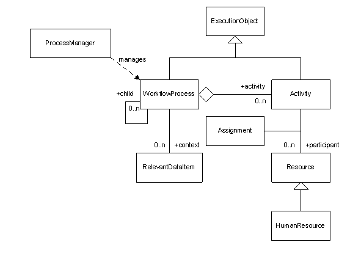

|
|||||||||||
| PREV PACKAGE NEXT PACKAGE | FRAMES NO FRAMES | ||||||||||
See:
Description
| Interface Summary | |
|---|---|
| ResourceEntity | Interface for obtaining the assignments of a resource participating in workflow processes. |
| WorkItem | This interface provides general information about a work item. |
| Class Summary | |
|---|---|
| Activity | This class provides general information about a workflow actvity. |
| ActivityEntity | Class that provides management capabilities for an activity in a workflow process |
| ActivityParticipant | This class is a specialization of workflow participant within the context of a workflow activity. |
| ActivityResult | This class holds the result of an activity. |
| Assignment | This class provides general information about an assignment, or work item. |
| AssignmentEntity | Class that provides management capabilities for an Assignment in a workflow Activity. |
| AssignmentEventAudit | This defines the class for assignment event audit information |
| AssignmentGroup | This class provides general information about a group of assignments. |
| CompleteManualActivityEventAudit | This defines user complete manual activity event audit information |
| CreateProcessEventAudit | This defines the create process event audit information |
| DataEventAudit | Class representing an data change event in the workflow engine. |
| DeferWorkItemEventAudit | Audit information for when an activity is deferred. |
| EventAudit | Class representing an auditable event in the workflow engine. |
| ExecutionEntity | Class that provides management capabilities for an executable object within the workflow engine, such as processes and activities. |
| ExecutionObject | This class provides general information about an object that is executed by the workflow engine. |
| HumanResourceEntity | Class representing a human resource participating in workflow processes. |
| I18NInformationEventAudit | Class representing an auditable information event in the workflow engine. |
| InformationEventAudit | Class representing an auditable information event in the workflow engine. |
| InitialProcessContext | Class that holds the intitial context of a workflow process, including the type of the process, the scheduled time of the process, the relevant data to be used as the process runtime context, and other configuable items that define how the process will execute. |
| PackagedApprovalDecisionItem | This class extends the PackagedApprovalItem class to add information about the decision for a particular item. |
| PackagedApprovalDocument | This class is used as a workflow relevant data item for activities that require an approval decision on multiple items in one atomic step. |
| PackagedApprovalItem | This class is used as a component of the PackagedApprovalDocument workflow relevant data item. |
| Participant | This class provides information about a workflow participant. |
| ParticipantResolveFailureEventAudit | This defines the class for participant resolve failed event audit information |
| PasswordPickupEventAudit | This defines user password pickup event audit information |
| PendingActivity | This class is used to give an aggregate view of a pending manual activity |
| ProcessManager | Class that provides the interface for creating and querying workflow processes within the workflow engine. |
| ProcessParticipant | This class is a specialization of workflow participant within the context of a workflow process. |
| RelevantDataItem | This interface provides general information about a workflow relevant data item. |
| StateEventAudit | This represents audit information for process and activity state change events. |
| TimeoutEventAudit | This defines the class for timeout event audit information |
| WorkflowProcess | This class contains general information about a workflow process. |
| WorkflowProcessEntity | Class that provides management capabilities for a workflow process. |
| Enum Summary | |
|---|---|
| PackagedApprovalItem.ItemType | The ItemType enumeration provides the possible
object types that could be represented by this approval item. |
| Exception Summary | |
|---|---|
| WorkflowException | This class is used for errors that occured within the workflow engine. |
Provides a model and an applications programming interface for the workflow engine.
The Workflow API has been developed to provide the developers of custom extensions to Tivoli Identity Manager a portable and backwards-compatible interface to the workflow environment. This interface is most beneficial when building custom code that can be called from a workflow process as a custom Java application or a JavaScript function (see the JavaScript API for more details). This custom code can then perform special business logic, query external data stores, or even integrate with other workflow engines.
The API consists of a set of java classes that abstract the more commonly used concepts of the workflow environment, such as processes, activities, and relevant data. The classes that make up this API are the same classes the platform uses for its out-of-the-box feature set. A note about security: these classes communicate directly with the workflow engine without authenticating the caller. Clients of this API will be assumed to have an appropriate level of trust. The API is not intended to be used by external un-trusted clients, but to be used within the flow of the provisioning platform’s business logic. It cannot be used remotely or for an external application to iinvoke Tivoli Identity Manager services, and must be used within the platform's runtime environment. The easiest way to deploy client code within the platform’s environment is to have the platform call the code from its published workflow extensions, such as a Java Application activity or a JavaScript activity.
The Workflow API consists of a set of classes that represent the more commonly used concepts of the workflow environment.
The UML class diagram in Figure 1 below illustrates the primary objects available in the API and their relationships. The primary object is the WorkflowProcess. A WorkflowProcess is parameterized by a set of RelevantDataItems and is implemented by a set of Activities. If an Activity is manual and requires the participation of a Resource, and Assignment is created to represent the task and fulfill the relationship. The most typical type of Resource is the HumanResource. There are several more objects available in the API that are not shown here. See the class level documentation for all classes in this package for a full specification.

Figure 1 - Primary Workflow Class Diagram
There is a consistent framework implemented in this API for querying and operating on workflow objects. This framework is centered on an entity class. An entity class is a composite class that holds a reference to a value class that holds the defining attribute information for the entity, and provides access to other related entities. The attribute information is cached for the life of the entity, however, every time a relationship is evaluated, the entity, or entities, that participate in that relationship will be loaded from the data store. For example, the name of a workflow process is cached within the WorkflowProcess entity class, but when the client requests the activities of the process, the activities will be retrieved from the data store and represented as Activity entities.
The following method uses the Workflow API to print the audit trail of a specified process. It organizes the audit trail by activity.
public static void printAuditTrail(long processId) {
try {
// Retrieve the process information
WorkflowProcessEntity process = new ProcessManager().getProcess(processId);
// Retrieve activities
Collection activities = process.getActivities();
Iterator iter = activities.iterator();
// Iterate over all activities and obtain audit trail
while (iter.hasNext()) {
ActivityEntity activity = (ActivityEntity)iter.next();
System.out.println(activity.getValueObject().getDesignId());
List auditTrail = activity.getHistory();
Iterator auditIter = auditTrail.iterator();
// Iterate over all audit records and print
while (iter.hasNext()) {
EventAudit record = (EventAudit)iter.next();
System.out.println(record.getTimeStamp + ": " + record.getEventType());
}
System.out.println();
}
} catch (WorkflowException we) {
System.err.println("Workflow Exception: " + we.toString());
}
}
|
|||||||||||
| PREV PACKAGE NEXT PACKAGE | FRAMES NO FRAMES | ||||||||||